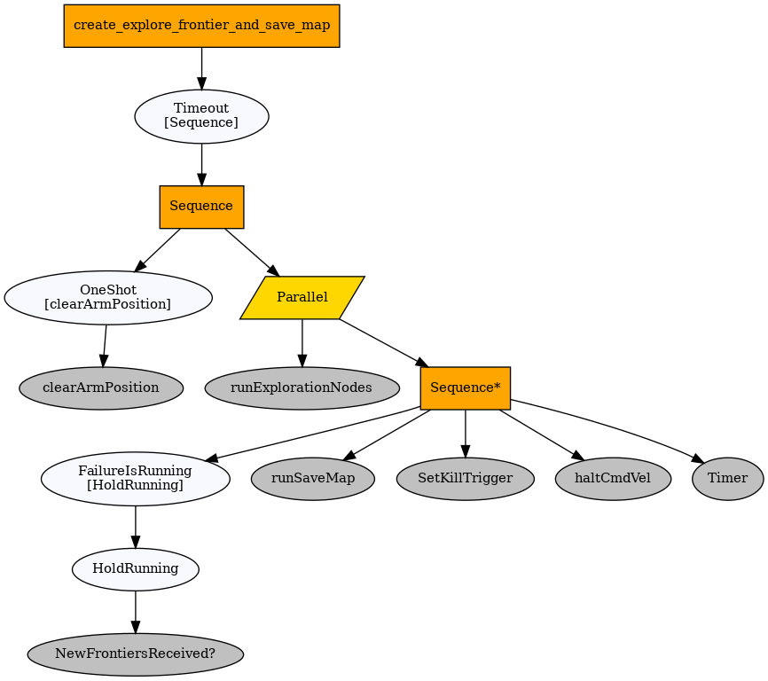

How does our System Work?

Dr. Phil consists of 5 interconnected sections:
- A navigation stack which maps the environment and moves the robot to it's objectives.
- A disinfecting stack that pumps disinfectant to a nozzle located at the top of the arm.
- An arm movement stack that can grip doors as well as move for maximum spray coverage.
- An iOS app that allows users to controls the robot at a high level.
- A vision stack which can detect door handles.
A sequence diagram for the basic use case:
Behaviour tree
To tie all the robot tasks, behaviour trees were employed. This is due to the need for modular behaviour composition, and reactivity, modularity, as well as ease of maintenance and readability. Alternatives considered were finite state machines and their variations - but those were dismissed on account of the vast number of transitions required and the difficulty in maintaining,testing and growing complex behaviours as we go.
The general structure of the project was designed to promote re-use of sub-trees of various sizes and test-ability of individual components. We used the py_trees and py_trees_ros ROS packages as the basic behaviour tree frameworks, both of which provide excellent documentation, backward compatibility and flexibility for extension.
Navigation
Disinfection
The disinfection stack is primarily hardware based. We have a pump which pumps water from the base of the turtlebot to the nozzle located at the top of the arm. This is necessary because the liquid storage tank is heavy and would unbalance the arm if installed on it. As the tank is directly on top of the turtlebot, any spillage would be disastrous. Therefore the tank has a screw cap so it won't spill during normal operation whilst still being easy to remove and refill.
The Nozzle

To spray the disinfectant onto contact points, we ultimately decided to use a 60 degree full-cone nozzle, which evenly distributes the disinfectant inside it's spray cone. This is important to ensure the spray will cover contact points efficently and accurately as seen in the evaluation section. A further benefit to this is that the spray simulation we created in gazebo has similar properties to the full cone (namely a even and full spread) so we can be sure that it's a good representation of the real functionality.
Control
Dr. Phil controls the pump via the 12V openCR board on the turtlebot, which is itself connected to a motor board. This is necessary because the pump has to be relatively powerful to be able to lift the water up to door handle height, and the Raspberry Pi's GPIO can output only 3.3V. We also have a LED strip which was used to simulate when spraying was happening, which is useful for informing nearby people about the status of Dr.Phil.
As seen in the image, we also had to create fixings to keep everything still, as the robot might accidentally dislodge components when moving.
Arm control
Vision
App
The iOS app is the preferred method of communicating with Dr.Phil. We decided to develop for iOS first because it has a market majority in the UK. We decided to use firebase, a cloud based noSQL storage solution, to bridge the connection between the two. We chose Firebase primarily as it's easily accessible from any platform, and our immediate goals involve developing an android/web app so Dr. Phil can be controlled on anything. Firebase was integrated into the app via cocoapods, and Dr.Phil via python libraries. The app was built using Swift.
For the user to actually communicate, they would first securely login to the app, establishing a connection with firebase.

Changing settings in the app would then push those settings to firebase. A local server regularly reads the firebase settings and sends those to Dr.Phil, which then updates itself accordingly. Firebase would easily allow an user to connect to to more than one Dr.Phil at a time, and minimises setup necessary to pair up the app and the bot.
Dr.Phil also pushes statistics to firebase via it's python library, which is then viewable on the app.